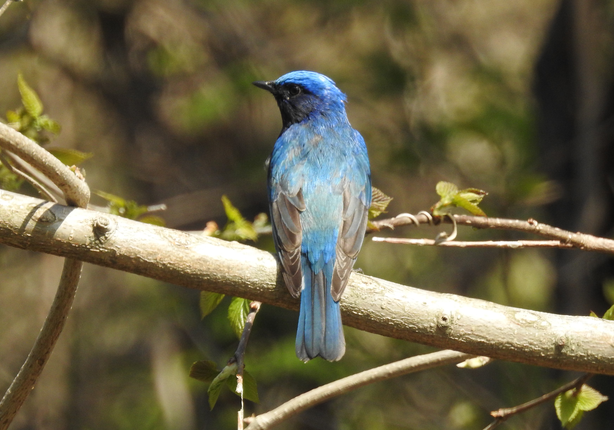

소개
갤러리
사진에 커서를 올려보세요

Blue-and-white Flycatcher
Date: 2022.05.08
by Hyunsoo Song
Photo Gallery는 제가 2021~2022년 동안 촬영한 조류 사진들을
업로드하는 공간입니다. HTML과 CSS를 이용해서 화면을 구성했으며,
Github를 사용하여 수정 사항을 저장하고
사이트 주소를 생성하였습니다.
사진에 커서를 올려놓으면 사진에 대한 정보를 제공합니다.